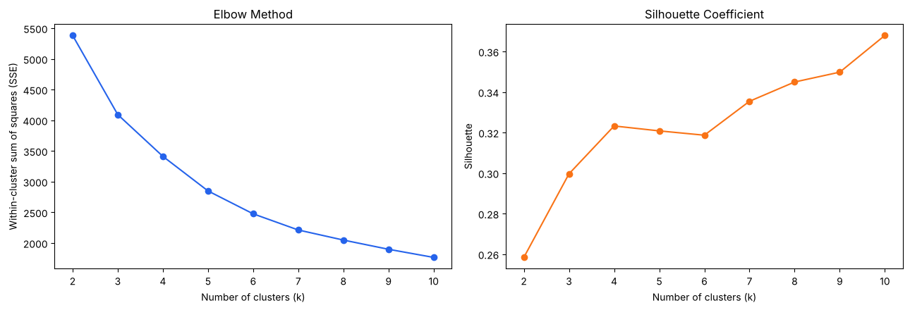
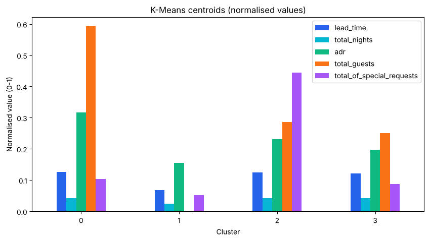
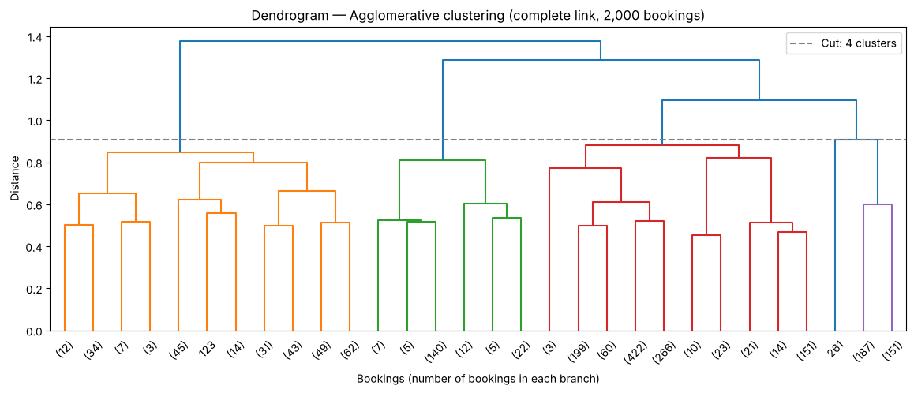

07 — Cluster Analysis: Grouping Similar Bookings
A cluster is a collection of data objects which are similar to one another within the same cluster and dissimilar to the objects in other clusters.
Cluster analysis is unsupervised learning: there are no predefined classes.
In this notebook:
- Clustering tendency: Hopkins statistic
- Partitioning methods: K-Means (with K-Means++ initialisation) and K-Medoids (PAM)
- Hierarchical method: Agglomerative clustering (AGNES) with single, complete, average and centroid link, and the dendrogram
- Density-based method: DBSCAN
- Evaluation: Elbow method and silhouette coefficient
import numpy as np import pandas as pd import matplotlib.pyplot as plt from pathlib import Path from sklearn.preprocessing import MinMaxScaler from sklearn.cluster import KMeans, AgglomerativeClustering, DBSCAN from sklearn.neighbors import NearestNeighbors from sklearn.metrics import silhouette_score BLUE, CYAN, GREEN, ORANGE = "#2563eb", "#06b6d4", "#10b981", "#f97316" COLORS = [BLUE, ORANGE, GREEN, "#a855f7"] FIG_DIR = Path("../figures") pd.set_option("display.width", 200) df = pd.read_csv("../data/processed/hotel_bookings_final.csv") print(df.shape)
(86620, 41)
1. Attributes for Clustering
K-Means divides numerical data into K clusters, so five numerical attributes that describe the booking are used.
The class label is_canceled is not used to build the clusters; it is only used afterwards to describe them.
ATTRIBUTES = ["lead_time", "total_nights", "adr", "total_guests", "total_of_special_requests"] df[ATTRIBUTES].describe().round(1)
| lead_time | total_nights | adr | total_guests | total_of_special_requests | |
|---|---|---|---|---|---|
| count | 86620.0 | 86620.0 | 86620.0 | 86620.0 | 86620.0 |
| mean | 80.3 | 3.7 | 107.2 | 2.0 | 0.7 |
| std | 86.0 | 2.7 | 51.3 | 0.7 | 0.8 |
| min | 0.0 | 1.0 | 0.0 | 1.0 | 0.0 |
| 25% | 12.0 | 2.0 | 72.9 | 2.0 | 0.0 |
| 50% | 50.0 | 3.0 | 99.0 | 2.0 | 0.0 |
| 75% | 125.0 | 5.0 | 134.5 | 2.0 | 1.0 |
| max | 709.0 | 69.0 | 510.0 | 5.0 | 5.0 |
2. Normalise the Attributes
Clustering groups points by distance (e.g. Euclidean distance).
Without normalisation, lead_time (0–709) would dominate total_of_special_requests (0–5).
scaler = MinMaxScaler() X = scaler.fit_transform(df[ATTRIBUTES]) pd.DataFrame(X, columns=ATTRIBUTES).describe().round(2)
| lead_time | total_nights | adr | total_guests | total_of_special_requests | |
|---|---|---|---|---|---|
| count | 86620.00 | 86620.00 | 86620.00 | 86620.00 | 86620.00 |
| mean | 0.11 | 0.04 | 0.21 | 0.26 | 0.14 |
| std | 0.12 | 0.04 | 0.10 | 0.18 | 0.17 |
| min | 0.00 | 0.00 | 0.00 | 0.00 | 0.00 |
| 25% | 0.02 | 0.01 | 0.14 | 0.25 | 0.00 |
| 50% | 0.07 | 0.03 | 0.19 | 0.25 | 0.00 |
| 75% | 0.18 | 0.06 | 0.26 | 0.25 | 0.20 |
| max | 1.00 | 1.00 | 1.00 | 1.00 | 1.00 |
2.1 Clustering Tendency: Hopkins Statistic
Before clustering, we check whether the data have an inherent grouping structure. The Hopkins statistic is a sparse sampling test for spatial randomness:
- Take $m$ random bookings and find the distance $w$ to their nearest neighbour in the data
- Generate $m$ random points in the same space and find the distance $u$ to the nearest booking
- $H = \dfrac{\sum u}{\sum u + \sum w}$
$H \approx 0.5$: the data are randomly distributed (no clusters). $H$ close to 1: the data are clustered.
def hopkins(X, m=200, seed=42): rng = np.random.RandomState(seed) nn = NearestNeighbors(n_neighbors=2).fit(X) sample = X[rng.choice(len(X), m, replace=False)] w = nn.kneighbors(sample, n_neighbors=2)[0][:, 1] # nearest other booking uniform = rng.uniform(X.min(axis=0), X.max(axis=0), size=(m, X.shape[1])) u = nn.kneighbors(uniform, n_neighbors=1)[0][:, 0] # nearest booking return u.sum() / (u.sum() + w.sum()) print("Hopkins statistic:", round(hopkins(X), 3))
Hopkins statistic: 0.987
The Hopkins statistic is close to 1 (0.987), so the bookings are clustered and not randomly spread. Many bookings are identical or almost identical (guests and special requests are whole numbers), which makes the nearest-neighbour distance inside the data very small and pushes $H$ towards 1. The value therefore shows that groups exist; it does not measure how strong they are.
3. K-Means Clustering
K-Means represents each cluster by a centroid (the mean of its data points):
- Initialise: choose K initial centroids. K-Means++ selects the next centroid with a higher probability if it is far from the centroids already chosen, which avoids a poor start (it is the default in scikit-learn)
- Assign: assign each data point to the cluster with the nearest centroid
- Update: recalculate each centroid using the mean of the points assigned to its cluster
- Repeat steps 2–3 until the clusters stop changing
Goal: minimise the Sum of Squared Errors
$$SSE(C) = \sum_{k=1}^{K}\sum_{x_i \in C_k} \lVert x_i - c_k \rVert^2$$
Different initial centroids can produce different results, so the initial centroids are chosen with K-Means++
(the default in scikit-learn), and the algorithm is run 10 times (n_init=10), keeping the run with the lowest SSE.
3.1 Determining the Number of Clusters
- Empirical method: $k \approx \sqrt{n/2}$
- Elbow method: use the turning point in the curve of the within-cluster sum of squares (SSE) against the number of clusters
- Silhouette coefficient: measures how compact and how well separated the clusters are (from −1 to 1, higher is better)
n = len(X) print("Empirical method: k ≈ sqrt(n/2) =", round(np.sqrt(n / 2)))
Empirical method: k ≈ sqrt(n/2) = 208
sse = {} silhouette = {} for k in range(2, 11): km = KMeans(n_clusters=k, init="k-means++", n_init=10, random_state=42) km.fit(X) sse[k] = km.inertia_ # SSE silhouette[k] = silhouette_score(X, km.labels_, sample_size=10000, random_state=42) pd.DataFrame({"SSE": sse, "Silhouette": silhouette}).round(3)
| SSE | Silhouette | |
|---|---|---|
| 2 | 5382.785 | 0.258 |
| 3 | 4092.278 | 0.300 |
| 4 | 3411.500 | 0.323 |
| 5 | 2848.041 | 0.321 |
| 6 | 2475.170 | 0.319 |
| 7 | 2211.618 | 0.335 |
| 8 | 2047.455 | 0.345 |
| 9 | 1897.175 | 0.350 |
| 10 | 1764.740 | 0.368 |
fig, axes = plt.subplots(1, 2, figsize=(13, 4.5)) axes[0].plot(list(sse.keys()), list(sse.values()), marker="o", color=BLUE) axes[0].set_title("Elbow Method") axes[0].set_xlabel("Number of clusters (k)") axes[0].set_ylabel("Within-cluster sum of squares (SSE)") axes[1].plot(list(silhouette.keys()), list(silhouette.values()), marker="o", color=ORANGE) axes[1].set_title("Silhouette Coefficient") axes[1].set_xlabel("Number of clusters (k)") axes[1].set_ylabel("Silhouette") plt.tight_layout() plt.savefig(FIG_DIR / "clu_01_elbow_silhouette.png", dpi=150, bbox_inches="tight") plt.show()

3.2 Final K-Means Model (k = 4)
The empirical method gives about 208 clusters, which is too many to summarise the data. The SSE curve bends at k = 4: after 4, adding a cluster gives only a small reduction in SSE.
kmeans = KMeans(n_clusters=4, init="k-means++", n_init=10, random_state=42) df["cluster"] = kmeans.fit_predict(X) print("SSE:", round(kmeans.inertia_, 1)) print("Silhouette:", round(silhouette_score(X, df["cluster"], sample_size=10000, random_state=42), 3)) df["cluster"].value_counts().sort_index()
SSE: 3411.5
Silhouette: 0.323
cluster 0 10797 1 14541 2 13762 3 47520 Name: count, dtype: int64
3.3 Describing the Clusters
Each centroid is shown in the original units (mean of each attribute in the cluster), together with the cancellation rate of the cluster.
profile = df.groupby("cluster")[ATTRIBUTES + ["is_canceled"]].mean().round(2) profile["bookings"] = df["cluster"].value_counts().sort_index() profile
| lead_time | total_nights | adr | total_guests | total_of_special_requests | is_canceled | bookings | |
|---|---|---|---|---|---|---|---|
| cluster | |||||||
| 0 | 89.38 | 3.88 | 161.32 | 3.37 | 0.52 | 0.39 | 10797 |
| 1 | 47.95 | 2.69 | 78.78 | 1.00 | 0.26 | 0.19 | 14541 |
| 2 | 87.92 | 3.86 | 117.61 | 2.15 | 2.22 | 0.20 | 13762 |
| 3 | 85.84 | 3.84 | 100.59 | 2.00 | 0.44 | 0.30 | 47520 |
3.4 Cluster Visualisation
The centroids (normalised values from 0 to 1) show which attributes separate the clusters.
centers = pd.DataFrame(kmeans.cluster_centers_, columns=ATTRIBUTES) centers.plot(kind="bar", figsize=(10, 5), color=[BLUE, CYAN, GREEN, ORANGE, "#a855f7"]) plt.title("K-Means centroids (normalised values)") plt.xlabel("Cluster") plt.ylabel("Normalised value (0-1)") plt.xticks(rotation=0) plt.legend(loc="upper right") plt.savefig(FIG_DIR / "clu_02_kmeans_centroids.png", dpi=150, bbox_inches="tight") plt.show()

4. K-Medoids (PAM)
K-Means is sensitive to outliers: extreme values pull the mean (centroid) away from the main group. K-Medoids represents each cluster by an actual data point, the medoid: the point with the smallest total distance to the other points of its cluster.
PAM (swap-based approach):
- Select K data points as the initial medoids
- Assign each data point to its nearest medoid
- Try swapping a medoid with a non-medoid point and keep the swap if it reduces the total distance (cost)
- Repeat until no further improvement is found
PAM needs the distance between all pairs of points, so, like AGNES, it is run on a random sample of 2,000 bookings.
# pip install kmedoids import kmedoids from sklearn.metrics import pairwise_distances rng = np.random.RandomState(42) idx = rng.choice(len(X), 2000, replace=False) X_sample = X[idx] D = pairwise_distances(X_sample) # Euclidean distance between all pairs pam = kmedoids.pam(D, 4, random_state=42) medoid_labels = pam.labels print("Cluster sizes:", np.bincount(medoid_labels)) print("Total distance (cost):", round(pam.loss, 1)) print("Silhouette:", round(silhouette_score(X_sample, medoid_labels), 3))
Cluster sizes: [737 592 335 336] Total distance (cost): 363.4 Silhouette: 0.301
medoids = df[ATTRIBUTES].iloc[idx].iloc[pam.medoids].copy() medoids["cancellation rate"] = pd.Series(df["is_canceled"].values[idx]).groupby(medoid_labels).mean().round(2).values medoids.index.name = "medoid (booking number)" medoids
| lead_time | total_nights | adr | total_guests | total_of_special_requests | cancellation rate | |
|---|---|---|---|---|---|---|
| medoid (booking number) | ||||||
| 79729 | 82 | 3 | 108.0 | 2 | 1 | 0.24 |
| 35659 | 71 | 3 | 95.0 | 2 | 0 | 0.34 |
| 72622 | 21 | 2 | 76.0 | 1 | 0 | 0.20 |
| 83730 | 59 | 3 | 138.0 | 3 | 1 | 0.32 |
K-Medoids also gives four groups, with a silhouette of 0.301, close to K-Means (0.320 on the same 2,000 bookings). The medoids are real bookings: for example, the first medoid is a booking made 82 days ahead, for 3 nights at €108, by 2 guests with 1 special request. The group sizes are more balanced (737 · 592 · 335 · 336) than K-Means on the same sample (1,076 · 344 · 318 · 262). Outliers were analysed in notebook 03, so both methods give similar groups. K-Means is used for the full dataset because PAM needs the distance between all pairs of bookings.
5. Hierarchical Clustering: Agglomerative (AGNES)
- Start with singleton clusters and continuously merge the two closest clusters (bottom-up)
- The result is drawn as a dendrogram; cutting it at a level gives the clusters
- The distance between two clusters depends on the link:
- Single link: the nearest members (sensitive to noise and outliers)
- Complete link: the most dissimilar members (compact clusters)
- Average link: the average distance over all pairs
- Centroid link: the distance between the centroids of the two clusters
The time complexity is at least $O(n^2)$, so a random sample of 2,000 bookings is used.
# same 2,000 bookings as K-Medoids for link in ["single", "complete", "average"]: agnes = AgglomerativeClustering(n_clusters=4, linkage=link) labels = agnes.fit_predict(X_sample) print(f"{link:9s} cluster sizes: {np.bincount(labels)} | silhouette: {silhouette_score(X_sample, labels):.3f}")
single cluster sizes: [1997 1 1 1] | silhouette: 0.399 complete cluster sizes: [ 339 1169 191 301] | silhouette: 0.128
average cluster sizes: [1995 3 1 1] | silhouette: 0.322
from scipy.cluster.hierarchy import linkage, fcluster Z_centroid = linkage(X_sample, method="centroid") labels = fcluster(Z_centroid, 4, criterion="maxclust") - 1 print(f"centroid cluster sizes: {np.bincount(labels)} | silhouette: {silhouette_score(X_sample, labels):.3f}")
centroid cluster sizes: [1923 75 1 1] | silhouette: 0.399
Single, average and centroid link put almost all bookings in one cluster and isolate a few unusual bookings as clusters of size 1 — they are sensitive to outliers. Their high silhouette is therefore misleading. Complete link produces more useful groups, so it is used for the dendrogram.
from scipy.cluster.hierarchy import linkage, dendrogram Z = linkage(X_sample, method="complete") plt.figure(figsize=(14, 5)) dendrogram(Z, truncate_mode="lastp", p=30, color_threshold=Z[-4, 2]) plt.axhline(Z[-4, 2], color="grey", ls="--", label="Cut: 4 clusters") plt.title("Dendrogram — Agglomerative clustering (complete link, 2,000 bookings)") plt.xlabel("Bookings (number of bookings in each branch)") plt.ylabel("Distance") plt.legend() plt.savefig(FIG_DIR / "clu_03_dendrogram.png", dpi=150, bbox_inches="tight") plt.show()

agnes = AgglomerativeClustering(n_clusters=4, linkage="complete") agnes_labels = agnes.fit_predict(X_sample) print("Silhouette on the same 2,000 bookings:") print(" K-Means: ", round(silhouette_score(X_sample, df["cluster"].values[idx]), 3)) print(" Agglomerative (complete):", round(silhouette_score(X_sample, agnes_labels), 3))
Silhouette on the same 2,000 bookings: K-Means: 0.32 Agglomerative (complete): 0.128
6. Density-Based Clustering: DBSCAN
DBSCAN finds clusters as dense regions separated by regions of low density. It does not need K, it can find clusters of arbitrary shape, and it marks the points that belong to no cluster as noise (outliers).
- Eps (ε): the radius of the neighbourhood of a point
- MinPts: the minimum number of points inside the ε-neighbourhood for a point to be a core point
- Border point: inside the neighbourhood of a core point, but its own neighbourhood is not dense
- Noise (outlier): neither a core point nor a border point
DBSCAN is sensitive to its parameters, so several settings are compared. DBSCAN needs the neighbourhood of every point and uses a lot of memory when many bookings are identical, so it is run on a random sample of 20,000 bookings.
rng = np.random.RandomState(42) idx_db = rng.choice(len(X), 20000, replace=False) X_db = X[idx_db] rows = [] for eps in [0.05, 0.1, 0.15]: for min_pts in [10, 20]: labels = DBSCAN(eps=eps, min_samples=min_pts).fit_predict(X_db) in_cluster = labels != -1 rows.append({"Eps": eps, "MinPts": min_pts, "clusters": len(set(labels[in_cluster])), "noise points": (~in_cluster).sum(), "noise %": round((~in_cluster).mean() * 100, 1)}) pd.DataFrame(rows)
| Eps | MinPts | clusters | noise points | noise % | |
|---|---|---|---|---|---|
| 0 | 0.05 | 10 | 22 | 1286 | 6.4 |
| 1 | 0.05 | 20 | 14 | 2223 | 11.1 |
| 2 | 0.10 | 10 | 19 | 240 | 1.2 |
| 3 | 0.10 | 20 | 15 | 379 | 1.9 |
| 4 | 0.15 | 10 | 18 | 107 | 0.5 |
| 5 | 0.15 | 20 | 17 | 157 | 0.8 |
The result depends on the parameters. A small Eps marks many bookings as noise (11.1% with Eps = 0.05 and MinPts = 20) and a large Eps marks almost none (0.5–0.8% with Eps = 0.15). Eps = 0.1 and MinPts = 20 gives 15 clusters and 1.9% noise, and is used as the final setting.
dbscan = DBSCAN(eps=0.1, min_samples=20) db_labels = dbscan.fit_predict(X_db) in_cluster = db_labels != -1 sizes = np.sort(np.bincount(db_labels[in_cluster]))[::-1] sil_dbscan = silhouette_score(X_db[in_cluster], db_labels[in_cluster], sample_size=10000, random_state=42) print("Clusters:", len(sizes), "| noise points:", (~in_cluster).sum()) print("Largest clusters:", sizes[:6]) print("Silhouette (without noise):", round(sil_dbscan, 3))
Clusters: 15 | noise points: 379 Largest clusters: [6169 4791 2438 1743 823 813] Silhouette (without noise): 0.356
The noise points are the bookings that DBSCAN does not place in any dense region. Their average values show how they differ from the other bookings:
db_sample = df.iloc[idx_db].copy() db_sample["dbscan_noise"] = ~in_cluster db_sample.groupby("dbscan_noise")[ATTRIBUTES + ["is_canceled"]].mean().round(2)
| lead_time | total_nights | adr | total_guests | total_of_special_requests | is_canceled | |
|---|---|---|---|---|---|---|
| dbscan_noise | ||||||
| False | 78.59 | 3.58 | 106.40 | 2.02 | 0.68 | 0.27 |
| True | 153.84 | 7.64 | 157.37 | 2.81 | 2.08 | 0.27 |
DBSCAN finds 15 dense groups instead of 4, because guests and special requests are whole numbers: the bookings form a separate dense island for each combination of values. Its silhouette (0.356, without noise) is not directly comparable with K-Means, and 15 groups are harder to describe than 4.
The noise points (379 bookings, 1.9%) are unusual combinations: longer lead time (154 days against 79), longer stays (7.6 nights against 3.6), a higher price (€157 against €106), and more guests and special requests. This agrees with notebook 03, where such values were real behaviour (early bookings, long stays, peak-season prices), and their cancellation rate (27%) is the same as for the other bookings. K-Means is kept as the main method because it gives four groups that are easy to interpret.
7. Comparison of the Methods
The silhouette coefficient is calculated on the same 2,000 bookings for the methods that need all pairwise distances. DBSCAN uses a different sample (20,000 bookings) and its silhouette excludes the noise points, so it is not directly comparable.
sil_kmeans = silhouette_score(X_sample, df["cluster"].values[idx]) sil_kmedoids = silhouette_score(X_sample, medoid_labels) sil_agnes = silhouette_score(X_sample, agnes_labels) comparison = pd.DataFrame({ "Method": ["K-Means", "K-Medoids (PAM)", "AGNES (complete link)", "DBSCAN (Eps = 0.1, MinPts = 20)"], "Family": ["Partitioning", "Partitioning", "Hierarchical", "Density-based"], "Clusters": [4, 4, 4, len(sizes)], "Bookings used": ["all (silhouette on 2,000)", "2,000", "2,000", "20,000, noise excluded"], "Silhouette": [round(sil_kmeans, 3), round(sil_kmedoids, 3), round(sil_agnes, 3), round(sil_dbscan, 3)], }) comparison
| Method | Family | Clusters | Bookings used | Silhouette | |
|---|---|---|---|---|---|
| 0 | K-Means | Partitioning | 4 | all (silhouette on 2,000) | 0.320 |
| 1 | K-Medoids (PAM) | Partitioning | 4 | 2,000 | 0.301 |
| 2 | AGNES (complete link) | Hierarchical | 4 | 2,000 | 0.128 |
| 3 | DBSCAN (Eps = 0.1, MinPts = 20) | Density-based | 15 | 20,000, noise excluded | 0.356 |
8. Summary
Question: What groups of similar bookings exist, and do they differ in cancellation?
| Cluster | Bookings | Description | Cancellation rate |
|---|---|---|---|
| 0 | 10,797 | families / groups (≈3.4 guests), highest price (≈€161) | 39% |
| 1 | 14,541 | single guests, lowest price (≈€79), shortest lead time | 19% |
| 2 | 13,762 | 2 or more special requests | 20% |
| 3 | 47,520 | typical couples (2 guests, ≈€101), few requests | 30% |
| Method | Family | Clusters | Silhouette |
|---|---|---|---|
| K-Means (K-Means++) | Partitioning | 4 | 0.320 (same 2,000 bookings) |
| K-Medoids (PAM) | Partitioning | 4 | 0.301 |
| AGNES, complete link | Hierarchical | 4 | 0.128 |
| DBSCAN (Eps = 0.1, MinPts = 20) | Density-based | 15 + noise | 0.356 (20,000 bookings, without noise) |
Findings
- The Hopkins statistic (0.987) shows that the bookings are clustered, so cluster analysis is appropriate.
- K-Means (k = 4, chosen with the elbow method) separates bookings mainly by number of guests, price and special requests.
- Large, expensive bookings (cluster 0) are canceled most often (39%); single guests and guests with special requests are canceled least (19–20%).
- Special requests are linked to fewer cancellations here and in the classification models (notebook 06), found here without using the class label.
- K-Medoids gives similar groups (silhouette 0.301 against 0.320).
- Agglomerative clustering with single, average or centroid link isolates a few unusual bookings (sensitive to outliers); complete link gives four usable groups but a much lower silhouette (0.128) than K-Means (0.320) on the same sample.
- DBSCAN finds 15 dense groups and marks 1.9% of the bookings as noise: long stays, early bookings and high prices that are real behaviour, not errors.
Limitation: the silhouette coefficient is about 0.32, so the clusters are only moderately separated. DBSCAN and PAM were run on samples because they need much memory or all pairwise distances.